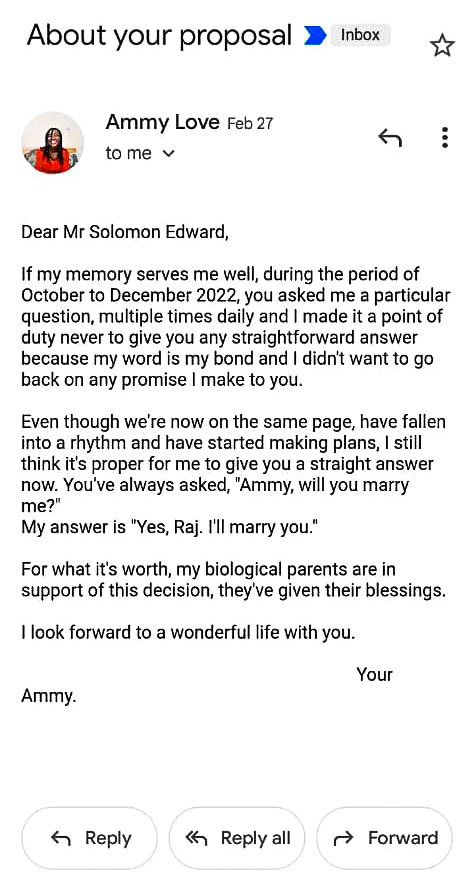

How we met!
I've never been a fan of fairy tales. I'm a realist. I didn't believe in those "boy-meets-girl" clichés portrayed in movies. I live in the real world, and the only places you could ever find me were either in school, church, at the market, at home, or
on my way to one of these places.
I convinced myself that I was a cynic, and I didn't bother with the effort of entering into any romantic relationship. As time passed, I perfected the delicate art of "friend-zoning," "big-bro zoning," "customer-zoning," and even "sir-zoning" my male admirers. I had simple excuses that served as my response to everyone who was curious enough to ask me what my reasons were for such attitude. I'd say something like "I'm not ready for a relationship just yet" or "I think that's too much hassle than I'm willing to undergo till further notice" on serious days. On playful days, I'd go with outlandish claims such as "love isn't for me," "I'm not a woman of preacher of love; I'm the war, I'm the fight, I'm the indabosky."
My social life, apart from my rapport with my coursemates, was largely virtual. I only hung out on social media. Well, I guess that's its purpose—socialization. However, I was deliberately biased in the connections I chose to nurture. I preferred people who resided over 300 km away from me because the relationship was very likely to remain virtual. Thanks to the distance.
As surprising as it may seem, I cultivated quite a number of connections on the platform, and a significant percentage of them thrived and have impacted me positively over the years. So, you see, meeting new people online wasn't exactly a novel experience for me.
Okay, I must confess, my first impression of Solomon was a single word: "Regal." That was the first time I saw his friend request on Facebook. On his display photo was this simple photo of him sitting with his arms bent at the elbow and crossed over each other, but it was his overall bearing that hit me—the upright shoulders, head held high, and the focused gaze. All of these culminated in my first impression of him. To put it simply, he had the bearing of an aristocrat and the visage of royalty.
Did I respond to his friend request? No. Why? I was super busy at the time. I had this gut feeling that I couldn't just give automated responses to such a person, that our chats couldn't just be some absentminded passage of time. So I said, "thank you, but I'll pass."
Somehow, I began to notice something unusual. Almost everywhere I scrolled, his friend request seemed to be popping up on my newsfeed more frequently than I was okay with. The typical me would have deleted the request and continued with my life. But for reasons I can't explain, I did the exact opposite. I accepted it. A few days later, he texted me. And should I say the rest is history?
I'll continue a little more. The first thing he said when he called me was Hello, Ammy." And despite the fact that I wasn't a fan of phone calls, I knew that I was definitely going to speak with this person again. It was that preverbal knowing again.
We couldn't really talk that first evening because, like I said, I was super busy. So I usually count the next day—September 3, 2022 as our first day. While we spoke that first day, he further distinguished himself when he asked about my spiritual life, growth, and journey. I was pleasantly surprised to see that he meant the questions and was genuinely interested in the topic in general. He even probed me for more detailed responses, was very patient and attentive while I responded. It truly felt like a breath of fresh air. "Finally, a Christian friend who wasn't obsessed with hearing his own voice!" That officially won my heart. Ever since, no day has passed without us talking for at least two hours.


 Read More...
Read More...
How he asked me out!
We started having extensive conversations right from the very first day. If not for discipline, we would have been on the phone together for the whole day. We knew where to draw the line, but we could not help talking late into the night. We literally crossed over into
the next day on the phone every night.
On the night of September 23, 2022, 20 days after we started talking, we had become really close, as if we had been friends forever. As had become our new norm, we talked past midnight, into the next day. Then it was time to sleep.
After our goodnights, he called my name, "Ammy." I responded, wondering if he would tell me what he wanted to say this time. (He had actually been calling me and then asking me not to worry about the reason he called me. Sometimes, he would start saying something and then stop abruptly. I had noticed it the previous day, but I didn't call attention to it.)
Then, out of the blue, he said the words, "Ammy, I love you. Yes, I do."
I was stunned into speechlessness! There was complete silence between us for close to 5 minutes. When I finally opened my mouth, the most remarkable journey of my life began.
 Read More...
Read More...
How he proposed!
Solomon brought up the topic of marriage less than a month into our relationship. He flew literally to the other end of the country to personally confirm what he was ordering for in December, and I was not disappointed. I was convinced beyond
doubt, but I couldn't just say yes to him, and he knew that.
I told my parents about him, and we took time to pray together. On February 21, 2023, my dad reached out to me, saying that he had no opposition to the relationship and expressing his and my mom's conviction and support. He also confided that Solomon's pastor had beautiful things to say about the young man. He essentially put the ball in my court, saying that I had the final decision to make, but that if I was still convinced, I had their blessing to say yes to him. I finally gave him my answer on his birthday, six days later, and we officially began courting.
He came down to present himself to my parents, and we began preparations in earnest. I honestly didn't expect anything like a public proposal, seeing as I'd already agreed to marry him and we were already making plans. The introverted side of me was quite pleased with the prospect.
I spent my last holiday in his city, visiting his family and friends. I took an immediate liking to Mr. and Mrs. Abel, friends of his. They offered to take me for dinner the following Saturday, but Solomon was not invited. The plan was for him to drop me off at an agreed-upon meeting place on his way to choir practise and pick me up on his way back. We sort of found ourselves running late that day, and I pleaded with him to just accompany me to the date instead, but he wouldn't hear of that. He finally dropped me off, and I began having a great time with the couple.
Then, boom! I heard his voice.

Read More...